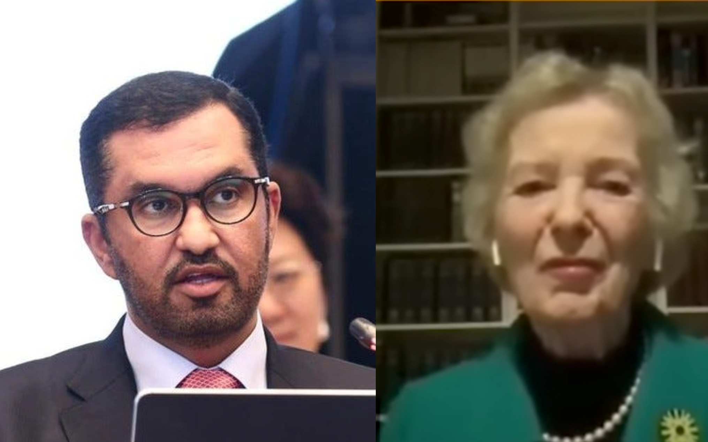

“Climate denial” is a pejorative characterizing those who willfully ignore the well-established connection between human activities and global warming. That flavor of denial involves the ignorance of physical science. But there is another kind of delusion whose persistence is even more disastrous: Many experts fail to fully acknowledge that coordinated human actions will be needed in the future to exert climate control. They deny their responsibility and instead place blame on others. That’s simply counterproductive. As I’ve said in other contexts, the problem with climate is not with those who don’t understand science but with those who do.
Naturally, the news helps illustrate my point. You may have seen the headlines: The Twenty-Eighth Annual Climate Operators Party (COP28 1 ) is finishing this week in Dubai, United Arab Emirates. I think of it as Burning Man for the climate elite, allegedly without the drugs (although I believe they have to be on something, considering what’s emerging).
Here’s why I think there is an object lesson in this year’s festivities. Sultan Ahmed Al Jaber, the President-Designate of COP28, is the head guy, the “president-designate,” of the conference. His day job is as the CEO of the Abu Dhabi National Oil Company (ADNOC). Before you judge a book by its cover, Sultan Al Jaber is a US-educated chemical engineer with an MBA. Before joining ADNOC, he founded Masdar, the largest renewable energy investor in the Middle East. Concurrently, he is the UAE’s Minister of Industry and Advanced Technology. In short, he’s a baller in business, engineering, and Middle Eastern politics. He’s not some Mr. Moneybags seeking to win the energy Monopoly game.
For all of the happy talk about pancultural acceptance by some in the political left, Sultan Al Jaber’s position with COP28 and ADNOC has led to indignant criticism by “climate activists.” Because he heads an oil company, these activists assume that he’s a shill for petroleum, intent on raping the planet for his own benefit. Judging from the hubris of various online reports, they have set their sights on discrediting him, and the innuendo is flying. I won’t bother repeating some of the crazy-ass shit that’s out there—you can find it easily enough.
What caught my eye this week was a report in The Guardian , a well-respected publication steeped in old-school journalism. The report, amplified elsewhere, is titled “ COP28 president says there is ‘no science’ behind demands for phase-out of fossil fuels .” If that is accurate, then it represents blatant climate denial from someone who certainly knows better. If it’s not, then The Guardian needs better editors.
So, what exactly transpired to expose this heretical behavior by a high priest? It turns out that Sultan Al Jaber participated in an event in September, “Friends of the Paris Agreement High-Level Dialogue.” [As if “Enemies” exist.] This coffee klatch was convened to keep the Paris objective (1.5°C) “within reach,” or at least to keep it on the global radar screen. At a high level, of course. At that meeting, he connected with Mary Robinson, former Taoiseach (president) of Ireland and the current chairperson of “ The Elders ,” a Star Wars cosplay group. 2 Robinson asked Al Jaber to participate in a virtual panel discussion as part of another opener, called (loudly) the SHE Changes Climate Summit, a meeting with the laudable goal of placing more women in leadership among the climate “elite”. [Just what climate needs: More leaders to attend cocktail parties.]

During this Zoom “summit”, Robinson and Al Jaber got into a heated discussion 3 . The video conference was recorded, and the specific context of the quote in the article’s title comes from a statement Al Jaber made. Here’s his complete sentence:
I am here factual [sic] and I respect the science, and there is no science out there, or no scenario out there, that says that the phase-out of fossil fuel is what's going to achieve 1.5 [°C]. 1.5 is my North Star and a phase-down and a phase-out of fossil fuel is, in my view, inevitable. It is essential. But we need to be real serious and pragmatic about it.
There is clearly skulduggery afoot here. Al Jaber is not a native English speaker, but he is fully bought into the 1.5°C objectives of the Paris Agreement and the eventual disappearance of fossil fuels. Robinson knows it. She wants to put words in his mouth, questioning the difference between an “urgent” task and a “Fast Track” one. To my ear, it sounds like the out-of-power politician, Robinson, is attempting to get the in-power businessman, Al Jaber, to commit to shutting ADNOC down unilaterally without a demand signal (i.e., a reduced market for fossil fuels) from developed economies! She blindsided him with a Hobson’s Choice and directed the entire blame on the petroleum producers. While the symbolism would be compelling if the commitment were carried out, every other petroleum producer would also need to end operations for there to be an effect. And Al Jaber would be out of a job.
Plus, Al Jaber has read the IPCC reports! He clarifies that by “the science”, he means the climate scenarios developed by scientists. The most aggressive (1.5°C) scenario, SSP1-1.9, reaches engineering net zero around 2050 and was composed by and for scientists. I covered this two years ago, immediately after COP26. Specifically, to reach net zero “means the amount of CO2 entering the atmosphere must equal the amount that is removed. 4 ” It has everything to do with engineering constraints and nothing to do with politics or finance, the main topics of conversation at these cocktail parties.
So, which one of them is involved in “climate denial”? Al Jaber is not ignoring the science; he’s citing it! On the other hand, Robinson seems to want to fix the blame on petroleum producers while ignoring the responsibility of the end-users of petroleum products. Such supply-side economics is voodoo. Instead of having a constructive dialog, she’s using her platform to score political points with someone who can actively make a difference, someone who believes that the Paris objectives are within reach if there is a worldwide collaborative effort. Ask yourself this: How willing will Al Jaber be to come out now and say, “Oops, I was wrong! I’ve decided to unilaterally shut down ADNOC’s core business with no market signal and no viable alternative.” The board would toss him out in a heartbeat. On the upside, perhaps he could join The Elders to opine on other’s failings.
Climate denial can also take the form of ignoring the science that requires cooperation and a concerted engineering-based approach. Many things need to happen simultaneously in the 1.5°C model, without which the objective will not be met. Robinson believes fixing the blame (without taking responsibility) will fix the problem. That’s delusional and counterproductive. I’d argue that it’s even more counterproductive than denying that humans are causing the problem in the first place! For those of you who dispute this, ask yourselves this: If you had the choice, wouldn’t you avoid an accident instead of blaming someone else for causing it?
The Guardian needs better editors, and the environmentalists should take their religious beliefs elsewhere. You can’t “listen to the scientists” selectively and expect a positive outcome.
The TLA indicates the Conference Of the Parties. It is the “supreme decision-making body of the [United Nations Framework] Convention [on Climate Change]”. Still, it could also be the Fraternal Order of International Climate Police, using the other connotation of “cop”. There’s copping a plea, copping out, all sorts of meanings.
Sounds like it, doesn’t it? It’s actually a group of high-profile former chief executives, including former President Jimmy Carter and former Secretary-General Ban Ki-Moon. Emphasis on ‘former’.
Here is a transcript of the complete exchange . Judge for yourselves:
Robinson: Can I come in at this stage to say, Sultan I'm really pleased that you did accept the invitation that I extended to you when we were together in Beijing with the Friends of the Paris Agreement to take part in this Summit. I think one urgent message has come through in the entire day of the Summit. I've heard it at every session, I think, and that is that we're in an absolute crisis that is hurting women more than anyone. Women and children, the elderly and those with disabilities, etc., and those most vulnerable, and it's because we have not yet committed to phasing out fossil fuels. That is the one decision that COP28 can take under your presidency, and in many ways, because you're head of the Abu Dhabi National Oil Company, you could actually take it with more credibility by saying, “I now recognize we have to phase out fossil fuel with just transition for the workers and their communities.” and just transition into renewable, accessible, affordable clean energy. It's not going to happen overnight as you say it will be orderly but urgent. I didn't hear the word urgent enough in your voice when you spoke earlier that's why I kind of interrupted.
Al Jaber: I said Fast Track I'm not sure what urgent means if Fast Track is not good enough.
Robinson: Fast Track is, you know, it can be more of a managerial term. Urgency is crisis mode.
Al Jaber: Yeah, yeah. We can always play with words here. You are a good politician, and you know how to use words better than I do. I'm a businessman. I am centered around delivery and actions.
Robinson: But will you lead on phasing out? Phasing out fossil fuel with just transition, as I've said.
Al Jaber: You can take the lead. I'll make sure I put you as an item on the agenda and I'll adopt it. Someone has to take the lead. You come from a developed country. Developed countries, I'm sure, can take the lead like they always do, and lead by example. You can lead by example, and, like I said from the beginning, I accepted to come to this meeting to have a sober and mature conversation. I'm not in any way signing up to any discussion that is alarmist. I am here factual and I respect the science, and there is no science out there, or no scenario out there that says that the phase-out of fossil fuel is what's going to achieve 1.5 [°C]. 1.5 is my North Star and a phase-down and a phase-out of fossil fuel is, in my view, inevitable. It is essential. But we need to be real serious and pragmatic about it.
Robinson: But the real serious and pragmatic doesn't take into account that we are in… I mean I respect that you've done a lot of hard work preparing for this COP and that you've listened to the science. The science is very acute now. We don't have any time. They say six or seven years. We’ve got to peak by 2025 latest in fossil fuel, and your company is investing in a lot more new fossil fuel and that's going to hurt women.
Al Jaber: Ma'am, you've just accused me of something that is not correct. I'm sorry, I don't take it now. I ask you to prove to…
Robinson: I read that your company is investing in a lot more fossil fuel in the future.
Al Jaber: Yes, ma'am. You're reading your own media, which is biased and wrong. I am telling you, I am the man in charge, and it is wrong. Ma'am, you need to listen to me, please.
Robinson: I'm very pleased to hear it. I'm very pleased to hear it.
Al Jaber: It is wrong. You guys write a lie, and you believe it. I'm sorry I do not accept…I'm sorry I respect you and I do not accept any false accusations. I've been very clear about my position. This is wrong. And you're asking for a phase-out of fossil fuels. Please help me, show me, a road map for a phase-out of fossil fuels that will allow for sustainable socioeconomic development. Unless you want to take the world back into caves, show me.
Robinson: Yes, I think we can.
Al Jaber: Give me the solution. You talk about having women be involved. We in this small country have included women, more than any other country in the world. 50% of our Parliament is women, 33% of our cabinet is women, 77% of our Emirati women enroll in higher education after Secondary School. Our women make up 64% of our university graduates. I'm sorry. Get your facts straight,t ma'am.
Robinson: No, no, I understand that I know that about the UAE. Are you actually saying you're not going to invest in the future in fossil fuels with your Abu Dhabi Oil Company?
Al Jaber: Say that again?
Robinson: Are you saying that I was mistaken in saying that you're going to invest in fossil fuel? Are you not going to invest in new fossil fuel? Because it's good to clarify if that is untrue.
Al Jaber: I'll accept it from you, ma'am. What is not true is what you said, that we're doubling capacity. We're not doubling capacity. That's number one.
Robinson: I didn't use those words.
Al Jaber: Ma'am, hold on. Let me just explain, the world will continue to need energy sources. We are the only ones in the world today that have been decarbonizing their oil and gas resources. We have the lowest carbon intensity, we have the low…We are seven kilograms! I have not heard you talk to the Norwegians or others the way you talk to us. Time has come, Mary, Mary…
Robinson: I don't accept that I'm selective. And I talk to the Norwegians. I talk to the US. The Elders talk to everybody across the board independently. But I'm glad that you're taking part in this discussion because you have such a role as president if you can encourage…
Al Jaber: Because I'm not a hypocrite, and I am not shying away from any facts. I am here talking to you just like I did in China. And I told you exactly: You need to get your facts straight.
Sophie: Can I thank you for this exchange, for this robust and, you know, positive, exchange? I think a clear invitation from his Excellency Al Jaber, Mary, to input into that road map and Mary, for you to share the expectation associated to this road map. I thank you for this exchange and I would like to bring Samar into this conversation.
Al Jaber: Sophie, I'm sorry to interrupt you. Mary interrupted me earlier. I'm going to have to come in now. I don't think Mary will be able to help solve the climate problem by pointing fingers or contributing to the polarization and the divide that is already happening in the world. What we need here is solutions. Show me the solutions. Stop pointing fingers. Show me solutions. Show me what you can do. Show me your own contributions, and I will salute you for it. Stop the pointing of fingers. Stop it.
https://www.ipcc.ch/sr15/